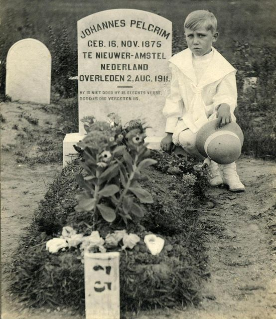

Johannes Pelgrim emigreerde vanuit Rotterdam naar Amerika, kwam aan 17-03-1903. Op foto naast graf Abraham Pelgrim, *13-12-1904, +06-01-1972. Johannes gravesite at Fair Lawn Cemetry, Maple Avenue, Fair Lawn, New Jersey, USA. Stam-F
Eerste |
Vorige afbeelding |
Volgende afbeelding |
Laatste
